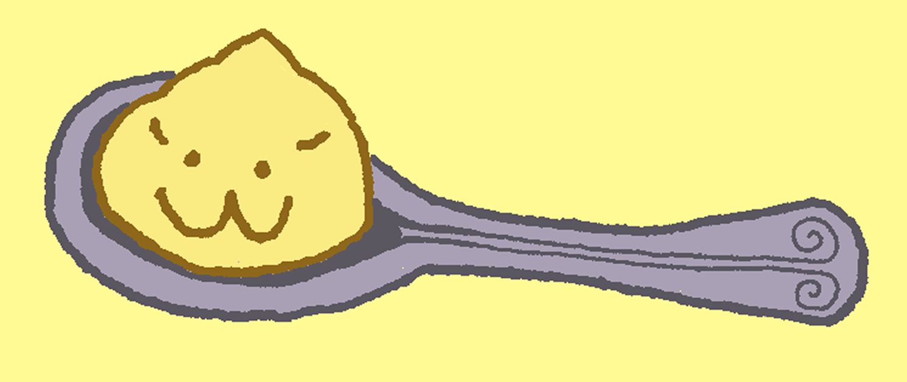

About Us

What We Offer
At Pudding Cup, pudding is only the beginning. We serve a variety of themed pudding cups inspired by classic flavors and creative combinations. Each cup pairs creamy, lightly sweetened pudding with thoughtfully chosen toppings for a balanced and satisfying treat. Our rotating selection gives guests something new to try with every visit.
Our Owners
Pudding Cup was created by two pudding-loving owners with a simple idea, to turn a simple dessert into something fun, creative, and worth coming back for. From developing new flavors to dreaming up each themed cup, we put love into everything we serve. They’re always experimenting with new flavors and looking for the next combination to add to the menu. For them, the best part of owning Pudding Cup is seeing people discover a new favorite.